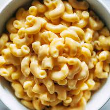

Macaroni and Cheese Recipe

Description
The moment you've all been wating for; it's time to unveil my world famous macaroni and cheese recipe!
You've probably seen this macaroni and cheese featured on the food network and the illustrious "Foods Only Famous People Eat" magazine.
Needless to stay, if you don't live under a rock, then you've seen this macaroni and cheese before.
Now, you'll be able to enjoy it within the comfort of your own home!
Ingredients
- 1 (8 ounce) box elbow macaroni
- 1/4 cup butter
- 1/4 cup all-purpose flour
- 1/2 teaspoon salt
- ground black pepper to taste
- 2 cups milk
- 2 cups shredded cheddar cheese
Steps
- Bring a large pot of lightly salted water to a boil.
Cook elbow macaroni in the boiling water, stirring occasionally until cooked through but firm to bite, 8 minuts.
Drain.
- Melt butter in a saucepan over medium heat; stir in flour, salt, and pepper until smooth, about 5 minutes.
Slowly pour milk into butter-flour mixture while continuously stirring until mixture is smooth and bubbling, about 5 minutes.
Add Cheddar cheese to milk mixture and stir until cheese is melted, 2 to 4 minutes.
- Fold macaroni into cheese sauce until coated. Serve.